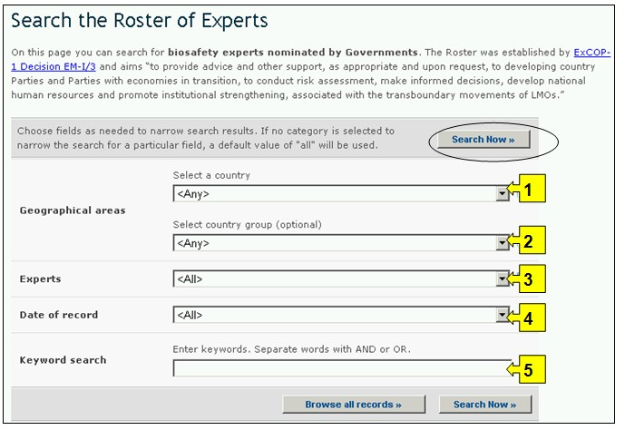
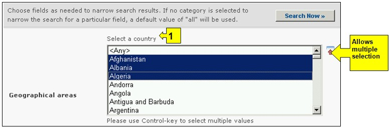
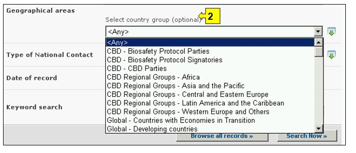
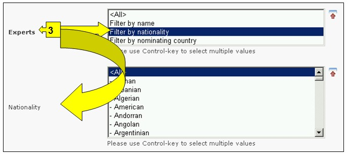
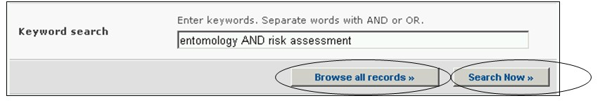

URL: http://bch.cbd.int/database/experts/
The Roster of Experts was established by the Conference of the Parties to the Convention on Biological Diversity (COP) when the Protocol was adopted (see Decision EM-I/3). Its purpose is to provide advice and other support, as appropriate and upon request, to developing country Parties and Parties with economies in transition, to conduct risk assessment, make informed decisions, develop national human resources and promote institutional strengthening, associated with the transboundary movement of LMOs”.
The COP-MOP, the governing body of the Protocol, decided that access to the roster of experts will be maintained through the BCH, where nomination forms for the roster are available, so that Parties can nominate experts. Reports on the Roster of Experts database and the voluntary fund are accessible under the reporting section of The Protocol pages. Module 03 covers access to these reports.
The search interface for the Roster of Experts database can be accessed from the Finding Information drop down menu on the navigation bar, or from the link in the left hand menu of the Finding Information page or the link in the Roster of Experts text on the same page. These links take users to the Search the Roster of Experts page where they can search for biosafety experts nominated by Governments.

Figure 57

Figure 58
This database enables users to search for Biosafety Experts nominated by Governments.
There are five search criteria boxes provided for refining searches in this database. Each of them has a drop down menu from which it is possible to select the required criteria. The default setting for each drop down menu is the first item at the top of the menu list. On the right side of each box, a button allows the user to activate multiple selections. Once in the multiple selection mode it is possible to add more criteria to the selection by clicking on the relevant criteria while pressing the Ctrl (Control) key.
Box 1 [Select a country] lists all the country names in a drop down menu, so that users can select one or more specific countries for a search.

Figure 59
Box 2 [Select country group] lists country groups in a drop down menu so that users can select one or more specific groups of countries for a search. The country group list contains all major geographical or political groupings of countries and allows for narrowing the search to records submitted only by the members of the selected group or groups.

Figure 60
Box 3 [Experts] allows the user to apply filters for the name, nationality or nominating country of the expert in order to further narrow the search to records that are specifically related to the selected criteria.
Selecting one or both filter criteria from the drop down menu opens additional search boxes with a drop down menu of options, each related to one of the selected filters. Multiple filters can be added by using the Ctrl (Control) key (i.e. by clicking on the relevant filter criteria while pressing the Ctrl key).

Figure 61
Box 4 [Date of record] allows the user to narrow the search according to the date records have been registered in the BCH. The drop down menu provides a number of options for limiting the search to only those records submitted within the selected interval of timeframe (e.g. ‘last day’, ‘last month’, ‘last year’, etc.).

Figure 62
Box 5 [Keyword search] provides an opportunity for using keywords to narrow the search. The user can use standard keyword syntax (combination of AND / OR operators) to search with multiple words or core parts of words (e.g. “Import OR Export”). A search that is made by using keywords only produces results of records containing exactly the searched text and not possible synonyms that have not been inserted (i.e. a search with the single keyword “Maize” will produce a list of records containing the word “Maize” but not the words “Corn” or “Zea mays”).

Figure 63
The search page offers three buttons to produce record list. The Search Now button (both at the top and bottom of the search interface) allows the user to activate a search based on the search criteria selected in the search facility boxes. The search results are sorted alphabetically by default according to country name. The Browse all records (at the bottom of the search interface) allows the user to obtain a list of all records in this database.

Figure 64
The Search Results pages have a sorting facility above the list of records. This can be used to sort the records according to criteria specific for that category of information. Note that the sorting criteria change when the user selects different search criteria.

Figure 65
Example: A user wishes to identify experts from Europe who have experience in forestry and risk assessment. The user (i) selects Eurasia – Europe (all countries) in the Geographical areas, country group box and (ii) enters forestry AND risk assessment in the Keywords box.
Activating the button presents the search results. The search results are displayed as a list of records, grouped according to country. Detailed information about each expert can be viewed by selecting the expert’s name, which opens the record.

Figure 66

Figure 67